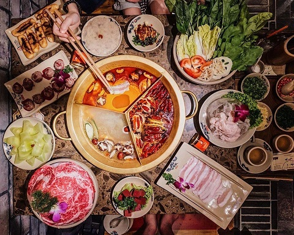
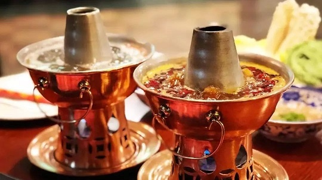
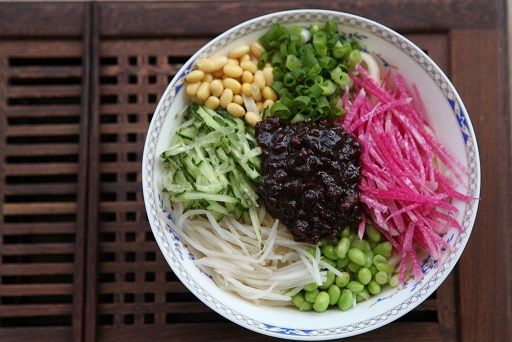
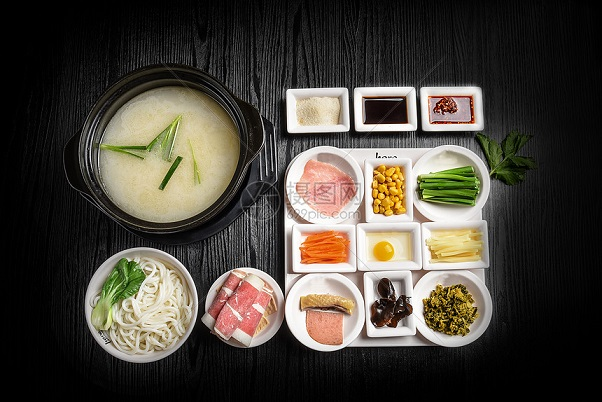
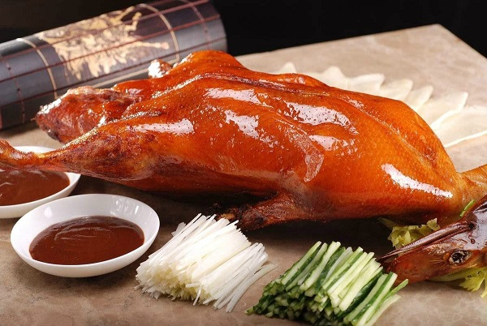
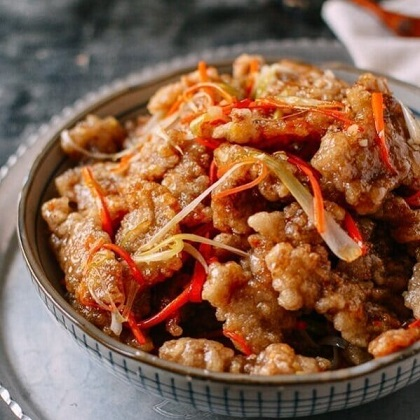

WELCOME TO FOODS
There many foods that I enjoy to eat. Most of them are Chinese foods, so this page is going to be about Chinese foods that I recommend everyone to try. I will only be explaining 5 foods and more if I have time.
WARNING PLEASE DO NOT READ THIS IF YOU ARE HUNGRY AT THE TIME! IT WILL MAKE YOU EVEN MORE HUNGRY!!!
Hot Pot
The first food I recommend is going have to be HOTPOT!
Hot pot, known as "antique soup" in ancient times. It is one of China's original delicacies, and it is also a kind of food suitable for all ages. There are two famous hotpots, the SiChuan hotpot and (my favorite) the BeiJing hotpot. The SiChuan hotpot is VERY spicy, like VERY SPICY it's not even normal spicy. Please do not try it if you can not eat foods that are spicy. That is the reason I like BeiJing hotpot, it is not spicy and the pots are made of copper, aluminum or sand.
Noodles
The second food I recommend are noodles!
I LOVE ALL CHINESE NOODLES!!! I simply can not choose one type of noodle to recommend. There are at least hundreds of different noodle dishes. For example, Beijing Soybean Paste Noodles (Zhajiangmian). Beijing soybean paste noodles is a staple dish in the capital, and it’s one of the cheapest dishes to buy. It is available in most restaurants serving Beijing-style food and snacks, or from smaller noodle restaurants scattered in Beijing's many alleys.
"Crossing the Bridge" Noodles is another type of noodle that I love! Upon ordering the noodles, you'll be presented with a large bowl of boiling broth and all the noodle dish ingredients on the side. The vegetables will be raw and the meat will be lightly cooked. The ingredients may consist of, but are definitely not limited to, beansprouts, egg, chicken, and sausage. Once inside the bowl, the ingredients will cook and the finished soup served in little bowls.
Peking Duck
Peking Duck is everytime I go to BeiJing a MUST EAT! Peking duck is a dish from Beijing (Peking)that has been prepared since the Imperial era. The meat is characterized by its thin, crisp skin, with authentic versions of the dish serving mostly the skin and little meat, sliced in front of the diners by the cook. Ducks bred specially for the dish are slaughtered after 65 days and seasoned before being roasted in a closed or hung oven. The meat is often eaten with spring onion, cucumber and sweet bean sauce with pancakes rolled around the fillings. Sometimes pickled radish is also inside, and other sauces can be used.
DONGBEI GUO BAO ROU (CRISPY SWEET & SOUR PORK)
Another food I recommend is DONGBEI GUO BAO ROU (CRISPY SWEET & SOUR PORK). I LOVE GUO BAO ROU!!! This Dongbei Guo Bao Rou isn’t a renowned dish. It has humble origins in Harbin during the Qing Dynasty, when it was apparently originally created for foreigners living there during that time period. Guo Bao Rou: robust sweet and sour flavor and a super crunchy and crispy texture that’s tender inside.
That is all for now! I MIGHT be adding more in the FUTURE. There are just too many dishes that I want to recommend. OH YA! Please do not eat all these within a week... The consequences are just sad.